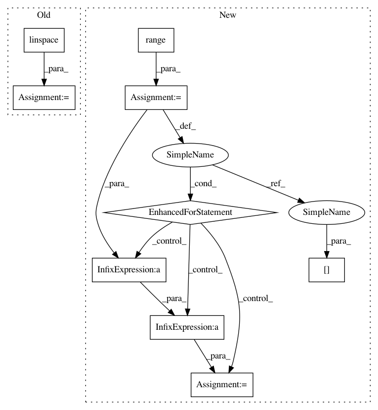

45d63060d155077f97e3cb42cf7551ec03af987c,gpytorch/kernels/grid_interpolation_kernel.py,GridInterpolationKernel,initialize_interpolation_grid,#GridInterpolationKernel#Any#Any#,14
Before Change
def initialize_interpolation_grid(self, grid_size, grid_bounds):
super(GridInterpolationKernel, self).initialize_interpolation_grid(grid_size, grid_bounds)
grid_size = grid_size
grid = torch.linspace(grid_bounds[0], grid_bounds[1], grid_size - 2)
grid_diff = grid[1] - grid[0]
self.grid_size = grid_size
self.grid_bounds = grid_bounds
After Change
self.grid_size = grid_size
self.grid_bounds = grid_bounds
self.grid = torch.zeros(len(grid_bounds), grid_size)
for i in range(len(grid_bounds)):
grid_diff = (grid_bounds[i][1] - grid_bounds[i][0]) / (grid_size - 2)
self.grid[i] = torch.linspace(grid_bounds[i][0] - grid_diff,
grid_bounds[i][1] + grid_diff,
grid_size)
self.grid = Variable(self.grid)
return self
def forward(self, x1, x2, **kwargs):
In pattern: SUPERPATTERN
Frequency: 3
Non-data size: 9
Instances
Project Name: cornellius-gp/gpytorch
Commit Name: 45d63060d155077f97e3cb42cf7551ec03af987c
Time: 2017-08-29
Author: ruihan.wu14@gmail.com
File Name: gpytorch/kernels/grid_interpolation_kernel.py
Class Name: GridInterpolationKernel
Method Name: initialize_interpolation_grid
Project Name: has2k1/plotnine
Commit Name: d695f661f194ba222386ac4848ac259814de3e49
Time: 2014-04-29
Author: has2k1@gmail.com
File Name: ggplot/geoms/geom_abline.py
Class Name: geom_abline
Method Name: _plot_unit
Project Name: rtavenar/tslearn
Commit Name: 496e50f396b6ead08e84898000a91b995529d957
Time: 2017-05-05
Author: romain.tavenard@univ-rennes2.fr
File Name: tslearn/adaptation.py
Class Name: DTWSampler
Method Name: transform
Project Name: cornellius-gp/gpytorch
Commit Name: 45d63060d155077f97e3cb42cf7551ec03af987c
Time: 2017-08-29
Author: ruihan.wu14@gmail.com
File Name: gpytorch/kernels/grid_interpolation_kernel.py
Class Name: GridInterpolationKernel
Method Name: initialize_interpolation_grid